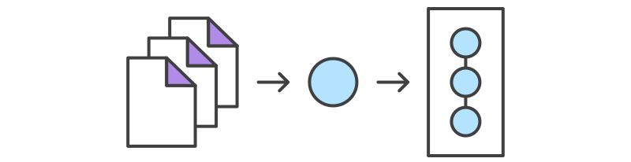

Değişiklikleri Kaydedelim
git add
Bu komut depodaki bir değişikliği Geçiş Bölgesi'ne (Staging Area) ekler. Bir sonraki commit'de hangi dosyalarda değişiklikler olduğunu belirtir. Bununla beraber git add komutunun depo üzerinde bir etkisi olmaz. Yapılan değişiklikler depo içine ancak git commit komutu ile dahil edilebilir. Bu nedenle git add komutu ile eklenen dosyalar Geçiş Bölgesi'ne alınır.
Bu komutlar ile birlikte git status komutu da kullanılmaktadır. Bu komut ile de çalıştığımız deponun ve Geçiş Bölgesi'nin genel durumuna bakılabilir.
Kullanımı
git add <dosya>
Bir sonraki committe kaydedilmek üzere <dosya> içindeki değişiklikleri Geçiş Bölgesi'ne ekler.
git add <dizin>
Bir sonraki committe kaydedilmek üzere <dizin> içindeki değişiklikleri Geçiş Bölgesi'ne ekler.
git add -p
Bu komut ile interaktif olarak Geçici Bölge süreci başlatılır. Üzerinde değişiklik yapılmış dosyalar için ne yapmak istediğinizi sorar. Cevap olarak;
y- Geçiş Bölgesi'ne göndermek içinn- Gözardı etmek içinq- Gözardı et ve kalan değişiklikler için işlem yapmadan süreci bitir.a- Geçiş Bölgesi'ne gönder ve kalan değişiklikler için de aynısını yap.d- Dosya bazlı olarak mevcut değişikliği kalan değişiklikleri gözardı et.
Tartışma
git add ve git commit komutları Git iş akışının temellerini oluşturmaktadır. Bu iki komut Git'i kullanmak isteyen herkes tarafından, ekip ya da bireysel olsun, iyi anlaşılması gerekir. Bu komutların yaptığı iş kısaca depo için versiyon geçmişlerini oluşturmak ve bunları kayıt altına almaktır.
Bir proje üzerinde çalışmak genel olarak düzenle/geçiş bölgesine gönder/commit yap şeklindedir. Öncelikle üzerinde değişiklik yapılması gereken dosyalar üzerinde gerekli değişiklikler yapılır. Yapılacak değişiklikler tamamlandıysa yapılan değişiklikler git add komutu ile Geçiş Bölgesi'ne gönderilir. Daha sonra Geçiş Bölgesi'ndeki mevcut durumdan memnunsanız, yani herhangi bir aksaklık ya da eksiklik yoksa proje üzerinde yapılan değişiklikleri proje geçmişine yazılmak üzere git commit komutu kullanılır.

git add komutu SVN'deki dosyayı depoya eklemeye yarayan svn add komutu ile karıştırılmamalıdır. Git'de git add komutu ara bir katmanda daha soyut bir şekilde çalışır. Yani bir dosya üzerinde her yaptığınız değişikliği git add komutunun çalıştırılması gerekir. Bu işlemin her defasında yapılması gereksiz gibi görünebilir. Fakat bu şekilde çalışmak üzerinde çalışılan projenin daha organize bir şekilde geliştirilmesini sağlar.
Geçiş Bölgesi (The Staging Area)
Geçiş Bölgesi Git'in diğer sistemlere nazaran benzersiz özelliklerinden birisidir. Özellikle SVN'den ya da Mercurial'dan gelen kullanıcılar için bu özelliği anlamak biraz zaman alabilir. Daha basit ifade etmek gerekirse, Geçiş Bölgesi, proje geçmişi ile çalışma dizini arasında tampon bir bölgedir.
Yapılan her değişikliği doğrudan commitlemek yerine Geçiş Bölgesi'ni kullanmak bir biri ile ilişkili ve anlamlı değişiklikleri gruplamamızı sağlar. Daha sonra topluca yaptığımız bu değişiklikler commit edilir ve proje geçmişine dahil edilir. Böylece bir projede bir birinden bağımsız dosyalar üzerinde yapılan değişiklikler daha sonra bir biri ile ilişkili ve mantıklı gruplar halinde commitlenir. Sadece Git'de değil, tüm versiyon kontrol sistemlerinde commitlerin atomik olması ve geri dönüşleri kolayca yapabilmeyi sağlamalıdır. Bunun yanında yapılan hataları ve ortaya çıkabilecek bugları da temizlemek projenin geneline dokunmadan daha kolayca yapılacaktır.
Örnek
Yeni bir projeye başlarken git add komutu SVN'deki svn import komutu ile aynı anlama gelir. Bulunduğumuz dizinde ilk commit'i göndermek için aşağıdaki komutlar kullanılabilir.
git add .
git commit
Proje üzerinde çalışmaya başladığınızda aşağıdaki komutlarla yeni dosyalar ekleyebilirsiniz.
git add merhaba.txt
git commit
Yukarıdaki komut aynı zamanda mevcut dosya değişkliklerinde de kullanılabilir. Git açısından bakıldığında bir dosyanın henüz yeni olması ya da üzerinde değişiklikler yapılan eski bir dosya olması önemli değildir. Her halükarda yapılan değişiklikler öncelikle Geçiş Bölgesi'ne alınır ve daha sonra commitlenir.
git commit
Bu komut ile Geçiş Bölgesi'nde yer alan değişiklikler proje geçmişine eklenir ve Geçiş Bölgesi temizlenir. Commitlenmiş değişiklikler bir projenin güvenli bir kopyası anlamındadır. Git commitlenen bu değişiklikleri özellikle müdahale edilmediği müddetçe değiştirmeyecektir. Bu komut git add komutu ile birlikte en önemli Git komutlarındandır.
Aynı isimde olsa da bu komut svn commit komutundan farklıdır. Git'de yapılan değişiklikler lokal depoya commitlenir ve diğer depolar ile bir etkileşimde bulunmaz.
Kullanımı
git commit
Geçiş bölgesini commit etmek için kullanılır. Bu komut kullanıldığında commit mesajının girilmesi için bir metin editörü açılır ve sizden commit ile ilgili bir mesaj girmeniz beklenir. Mesaj girildikten sonra dosyayı kaydedip çıkış yaptığınızda aşağıdaki komutun işlevi yapılmış olur.
git commit -m "<mesaj>"
Eğer isterseniz metin editörü açmadan doğrudan komut satırına yukarıdaki <mesaj> alanına yapılan değişiklikler ile alakalı bir açıklama girilerek Geçiş Bölgesi'ndeki değişiklikler proje geçmişne commit edilmiş olur.
git commit -a
Bu komut ile çalışılan projenin değişen dosyaları commit edilir. Üzerinde değişiklik yapılmış dosyalar daha önceden commitlenmiş ve geçmiş kaydı bulunan dosyalardır.
Tartışma
Geçiş Bölgesi'ne alınan değişiklikler her zaman lokaldeki depoya commitlenir. Bu özelliği ile SVN'den ayrılmaktadır. SVN'de commitler merkezi depoya gönderilir. Git ise sizi merkezi bir depo ile çalışmaya zorlamaz. Ne zaman istereniz lokalde yapmış olduğunuz değişiklikleri merkezi depoya gönderebilirsiniz. Geçiş Bölgesi çalışılan dizin ile proje geçmişi arasında tampon bölge olarak düşünüleceği gibi her bir geliştiricinin lokal deposu da yaptıkları değişiklikler ile merkezi depo arasında tampon bir bölgedir.
Bu özellik Git kullanan geliştiricilerin çalışma şekillerini değiştirmiştir. Yapılan bir değişikliği merkezi bir depoaya sürekli commitlemek yerine yapılan değişiklikler commitler aracılığı ile lokal depoda biriktirilir. Daha sonra belli aralıklarda merkezi depoya yapılan değişiklikler topluca gönderilir. Bu çalışma mantığı SVN'in çalışma mantığından daha avantajlıdır. Yapılacak belirlenmiş bir revizyon atomik commitler ile tamamlanabilir. Bu şekilde benzer işleri yapmak için yapılan commitler gruplar halinde yönetilebilir olacaktır. Bu ayrıca geliştiricilerin izole bir ortamda geliştirme yapabilmelerini de sağlar. Yapılması gereken işler ve değişiklikler tamamlandıktan sonra yapılan çalışmalar merkeze gönderilir.